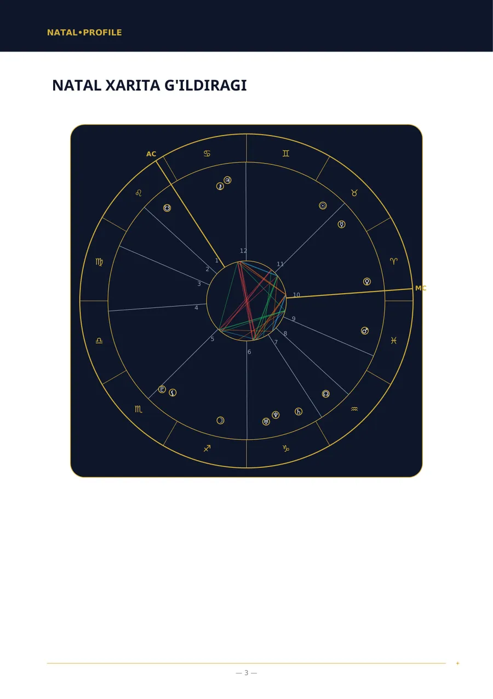
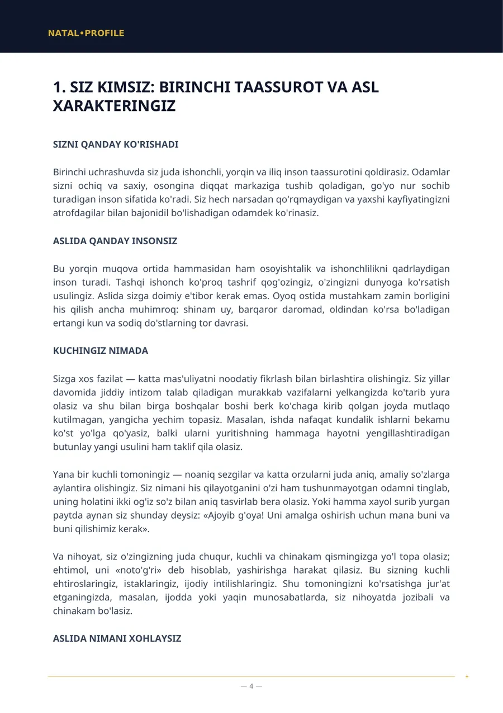
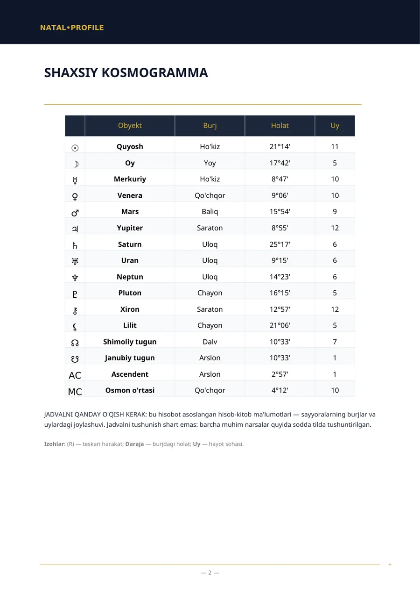
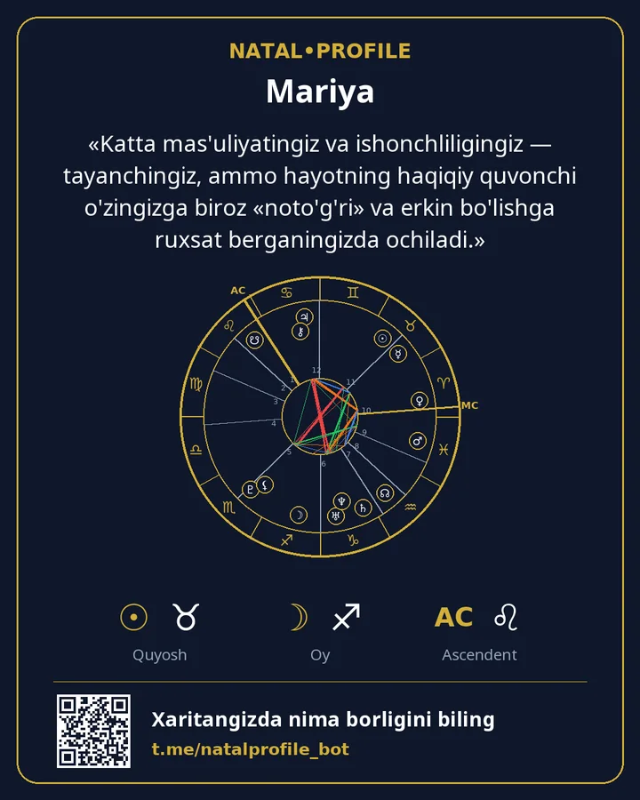

👶 Bolalar Xaritasi — farzandingizni tushunish uchun qo'llanma
Farzandingizga xotirjamlik uchun nima kerak va uni nimada qo'llab-quvvatlash lozim.
- 250 ⭐ Telegram Stars
- 7 ta bob
Ichida nima bor
- Farzandingiz xotirjam bo'lishi uchun unga nima kerak
- Energiya va faolik
- Xarakter va qiziqishlar
- Farzandingiz qanday fikrlaydi va o'rganadi
- Did va ijodkorlik
- Qoidalar va chegaralar
- Farzandingizni qaysi sohada qo'llab-quvvatlash kerak
Kimlarga mos keladi
- Farzandini yaxshiroq tushunmoqchi bo'lgan ota-onalar.
- Bola qoidalar va taqiqlarga qanday munosabat bildirishi tushunarsiz bo'lganda.
- Har qanday yoshdagi bola uchun mos keladi.
Nimalarni kiritasiz
Bolaning ismi, jinsi, tug'ilgan sanasi, vaqti va shahri.
Namuna sahifalar
«Natal xarita» hisobotining haqiqiy sahifalari. Bu namuna: tug'ilgan ma'lumotlar o'ylab topilgan.




Boshqa hisobotlar
Natal Xarita (To'liq Tahlil)
Tug'ilgan sana, vaqt va joy bo'yicha fe'l-atvoringizning to'liq tahlili.
250 ⭐9 ta bob · Batafsil →
Natal Xarita (Bazaviy Tahlil)
Tug'ilgan vaqt noma'lum bo'lganda fe'l-atvor tahlili.
150 ⭐6 ta bob · Batafsil →
Moslik Tahlili (To'liq)
Ikki kishi: sizni nima yaqinlashtirdi, qayerda kelisha olmaysiz va bir-biringizga nima berasiz.
250 ⭐6 ta bob · Batafsil →
Moslik Tahlili (Bazaviy)
Tug'ilgan vaqt noma'lum bo'lganda fe'l-atvorlar mosligi.
150 ⭐5 ta bob · Batafsil →